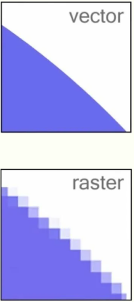

На примере графики наглядно видны преимущества ООП, смысл использования классов, их методов и свойств. Добавляя в пространство имен своего проекта соответствующие библиотеки, вы получаете сразу набор инструментов, необходимых для графики.
Это графические примитивы (линии, прямоугольники, эллипсы и т.п.), перо для черчения, кисть для закраски и много других полезных объектов и методов.
2D-графика делится, как вы знаете, на растровую и векторную. Растровое изображение — это набор цветных пикселей, заданных в прямоугольной области, хранящихся в файлах *.bmp, *.jpg, *.png и т.п. Самый простой растровый редактор — программа
Paint. Векторная графика намного экономнее (по объемам памяти) растровой. Так для рисования прямоугольника достаточно задать координаты двух точек (левого верхнего и правого нижнего углов) и цвет и толщину линии. В этом разделе в основном
рассмотрим методы векторной графики.
Пространство имен System.Drawing (Рисование) обеспечивает доступ к функциональным возможностям графического интерфейса GDI+ , используя около 50 (!) классов, в том числе класс Graphics. Чуть
позже мы будем использовать дополнительные пространства имен System.Drawing.Drawing2D, System.Drawing.Imaging, System.Drawing.Printing, System.Drawing.Text, расширяющие функциональные возможности библиотеки System.Drawing.

Класс Graphics предоставляет методы рисования на устройстве отображения (другие термины — графический контекст, «холст»). Определимся сразу, на чем мы хотим рисовать. Далее в примерах он обозначается как объект g.